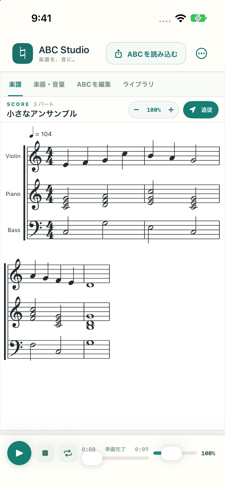

01 / SCORE
譜面を見ながら聴く。
ABCテキストからSMuFL準拠の美しい五線譜を瞬時に描画。ピンチで滑らかに拡大し、気になる音符をタップするだけでその位置から即座に再生。演奏中は音符の色付けと自動スクロールで追従します。
文字で書かれた音楽を、美しい五線譜とリアルな演奏に。
フレーズを確かめるときも、パートを聴き分けたいときも。
ABC Studio は iPhone と iPad のための直感的な楽譜プレイヤー＆エディタです。

スコアの直感的な確認から、パートごとの反復練習、そして外部アプリへの共有まで。音楽づくりをスマートにする機能を凝縮しました。
ABCテキストからSMuFL準拠の美しい五線譜を瞬時に描画。ピンチで滑らかに拡大し、気になる音符をタップするだけでその位置から即座に再生。演奏中は音符の色付けと自動スクロールで追従します。
ピアノ、弦楽器、管楽器、ギター、打楽器など78種類の楽器音色に対応。パートごとの個別音量、ミュート、ソロ再生を活用することで、合奏曲の中で自分の担当パートを明瞭に把握できます。
再生速度は音程を保ったまま50%〜200%まで自在にコントロール。シークや曲全体のループ再生に対応し、バックグラウンド再生やロック画面・コントロールセンターからのリモート操作も万全です。
.abc / .txt ファイルやクリップボードから簡単にインポート。入力ミスを通知する構文診断と下書きの自動保存を備えた内蔵エディタで修正し、ライブラリで安全に整理・管理できます。
練習用にとどまらず、印刷・共有・他ツールとの連携もシームレス。譜面のPDF出力からDAW連携用のMIDI・高品質WAVレンダリングまで、5つの形式で手軽に共有できます。
アカウント登録やログインは一切不要。楽譜の読み込み、表示、編集、演奏の合成、保存まですべてデバイス内（ローカル）で処理します。
アプリには広告、アクセス解析SDK、トラッキング機能は一切含まれていません。